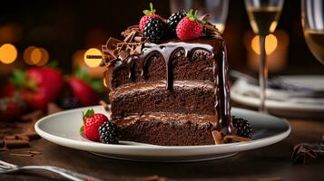

chococake

dense flourless chocolate cake that's rich and fudgy. Perfect for a decadent chocolate dessert and for those of us who can't tolerate wheat or gluten.
Ingredients
- Sugar: This flourless chocolate cake starts with white sugar
- Water: You'll need 1/2 cup of water, but some reviewers prefer using coffee for an extra depth of flavor.
- Salt: A pinch of salt enhances the overall flavor of the chocolate cake.
- Chocolate: Bittersweet chocolate balances the sweetness of the sugar, resulting in a wonderfully flavorful cake.
Steps
- Gather all ingredients. Preheat the oven to 300 degrees F (150 degrees C). Grease a 10-inch round cake pan; set aside.
- Combine sugar, water, and salt in a small saucepan over medium heat. Stir until completely dissolved; set aside.
- Melt bittersweet chocolate in a microwave-safe glass or ceramic bowl in 15-second intervals, stirring after each interval, 1 to 3 minutes. Pour chocolate into the bowl of an electric mixer.
- Beat in hot sugar water. Slowly beat in eggs, one at a time
- Pour batter into the prepared cake pan.